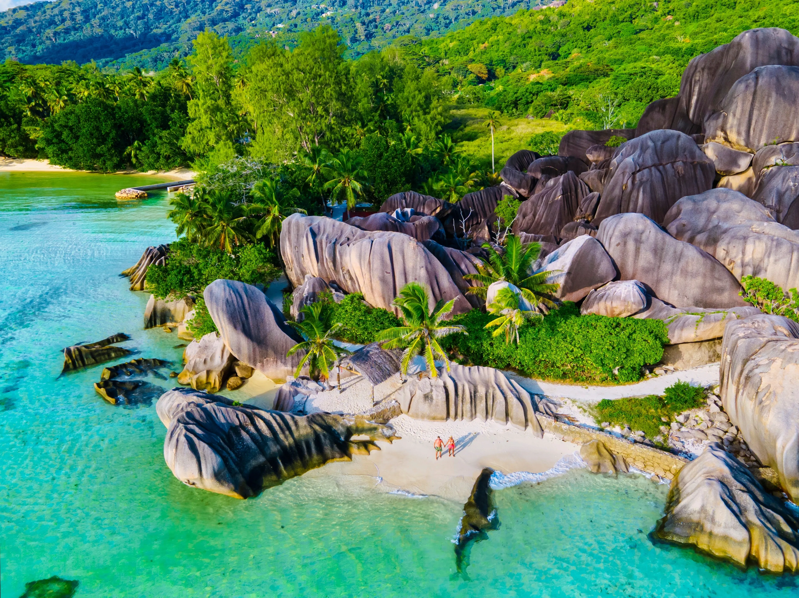

Luxury holidays in the Seychelles
Granite coves of La Digue, oceanfront villas and the tropical gardens of Mahé
Journeys created just for you
Leave your contact details — your travel manager will discuss your preferences and prepare a tailored proposal.
Form preview: submission must be connected to the site.
How to Plan a Holiday in the Seychelles
The Seychelles is an archipelago of 115 islands in the Indian Ocean, where a beach holiday can be combined with nature trails, boat trips, diving and travel between the islands. Planning the journey means choosing more than a resort: the right island, coast and transfer arrangements matter too.
One Island or a Multi-Island Itinerary
For a short, relaxed holiday, staying at one resort is often the most practical choice. With more time, two islands can be combined to experience different sides of the Seychelles.
Mahé is convenient for a varied itinerary and a closer look at local life and nature. Praslin suits a slower beach holiday, while La Digue is known for its easy pace, cycling and granite scenery. For greater privacy, consider a resort occupying its own island. Motor vehicle use on La Digue is limited, and bicycles remain the main way to get around.
When to Go
The Seychelles is warm throughout the year, with temperatures usually around 24–32°C. December to March tends to be warmer and wetter; May to September is generally drier, cooler and windier. March to May and October to November often bring calmer seas, making them attractive for snorkelling, diving and boat trips.
During windier months, conditions can differ substantially between coasts. Some beaches may have waves or seasonal seaweed, so the location of a resort should be matched to the travel dates.
How to Choose a Resort
Consider more than the resort category. Beach quality, ease of swimming, villa privacy, distance to facilities and the complexity of transfers all shape the stay. Families may prioritise calm water, children's programmes and convenient accommodation. Couples on a honeymoon may value seclusion, a private pool, views and the option of a private boat trip.
On remote islands, the resort itself becomes the centre of the journey, making restaurants, activities and meal plans particularly important.
Which Kind of Holiday Suits You
The Seychelles suits honeymoons, romantic journeys, family holidays and restful time by the ocean. A more active itinerary can include snorkelling, diving, hiking, yacht trips and visits to protected natural areas.
Tailored planning helps combine the right islands, select a resort for the season and arrange inter-island transfers in advance.